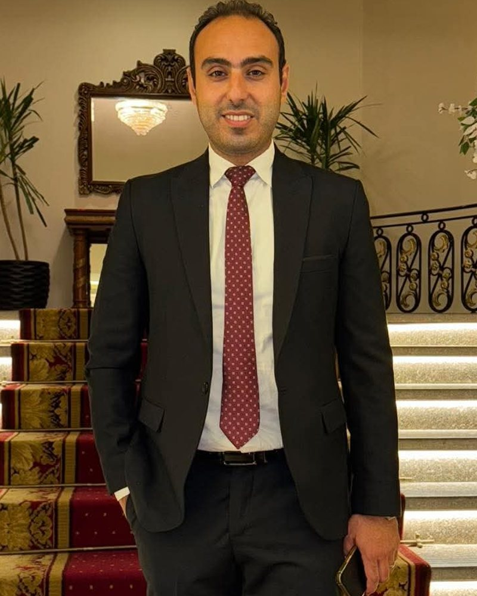

ابدأ من هنا
كيف يمكننا مساعدتك؟
ميسرة خلاف
المحاماة ليست حضورًا في الجلسة فقط.
هي مسؤولية تبدأ قبل أن يدخل الملف إلى المحكمة، وتستمر بعد انتهاء الجلسة. فهم الوقائع، وقراءة المستندات، وتحديد المسار القانوني، ومعرفة ما يمكن فعله وما لا ينبغي فعله، ثم اتخاذ القرار على أساس قانوني واضح.

المسؤولية النقابية
عضوية مجلس النقابة ليست مجرد صفة تُكتب بجوار الاسم، وإنما مسؤولية تجاه المحامين والمهنة والمشكلات اليومية التي يواجهها الزميل في عمله.